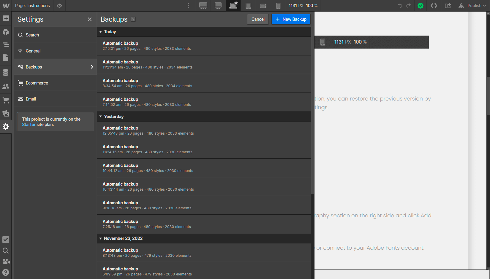
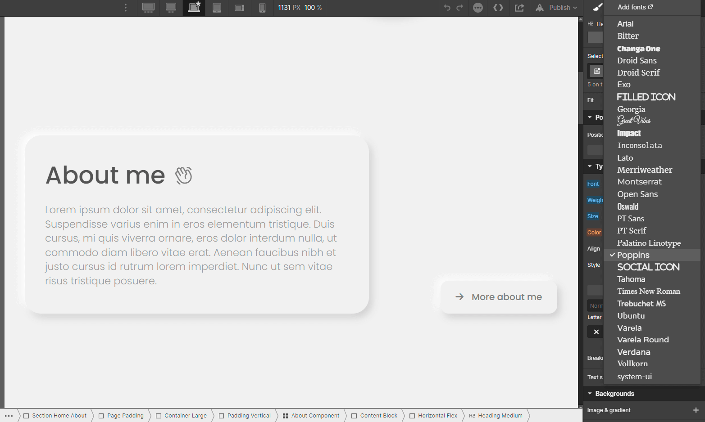
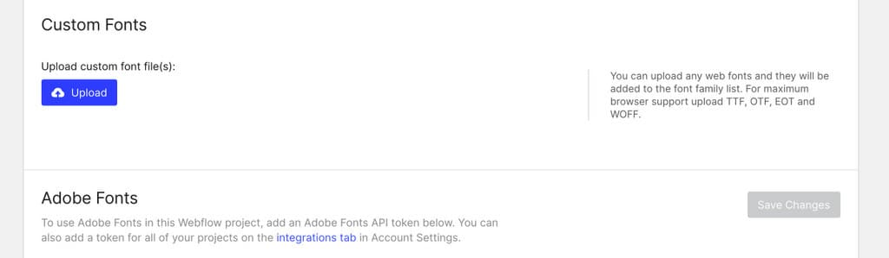
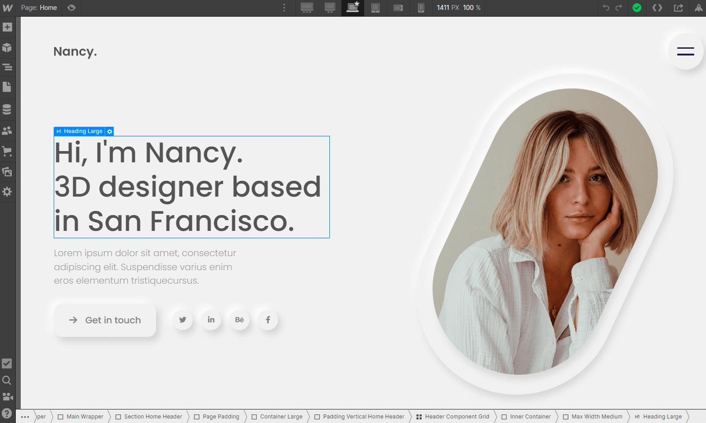
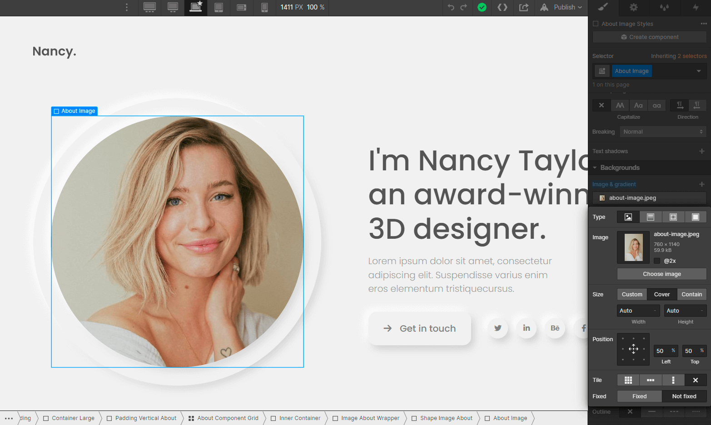
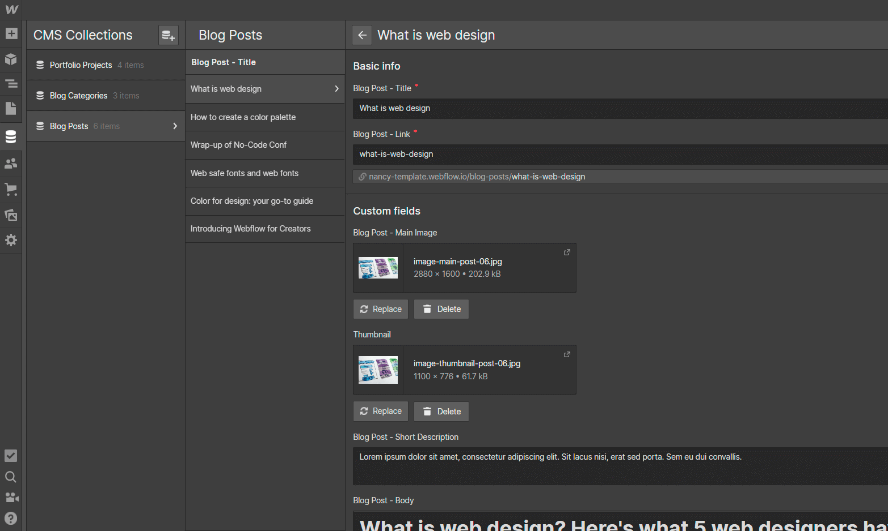
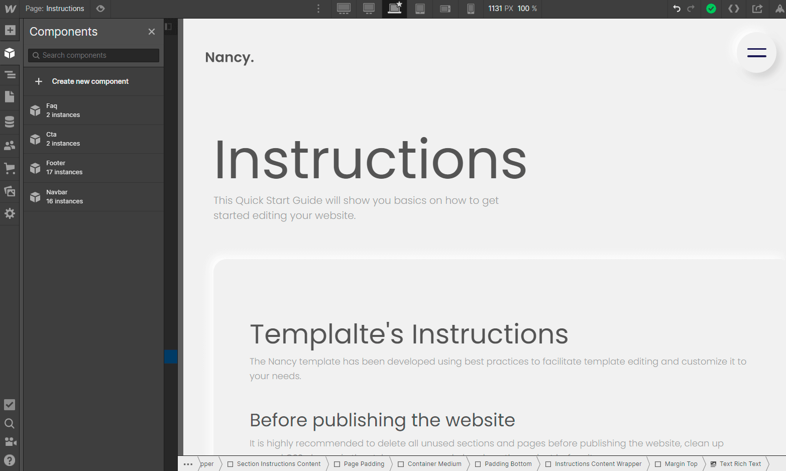

No items found.
Instructions
This Quick Start Guide will show you basics on how to get started editing your website.
Templalte's Instructions
The Nancy template has been developed using best practices to facilitate template editing and customize it to your needs.
Before publishing the website
It is highly recommended to delete all unused sections and pages before publishing the website, clean up unused CSS classes in the style manager and also clone the project before it.
Useful links from Webflow University:
Important Notes
Some tips and instructions on best practices in Webflow.
Breakpoints
When making any changes to the model, check how it behaves on mobile devices by clicking on the top bar of the viewport. Webflow simulates different screen sizes, such as tablet, mobile landscape, mobile portrait, as well as larger desktop sizes.
Backups
If you delete any component of the template and regret the action, you can restore the previous version by going to the Backups section in the left sidebar and clicking Settings.

Styling
Here are some of the main template style topics on Webflow.
Fonts
You can easily update the font in Webflow, just go to the Typography section on the right side and click Add Fonts, you will be redirected to the Project Settings.

In the Project settings, Webflow allows you to add external fonts or connect to your Adobe Fonts account.

Note: Optimize your Fonts
If you want to add some other font, get better optimization by using services like CloudCovert to convert fonts to WOFF2 format.
Editing Images and Texts
Here is how to edit images and template text in Webflow.
Texts
When you hover the mouse over the text, Webflow identifies whether the content is static or dynamic, if the border of the text field turns blue, it means that the text is static, just double click on it and you can edit it directly there.

If the border of the text field turns purple when you hover over it, it means that it is dynamic text and can only be changed directly in the CMS section.
Images
Images can be easily replaced in Webflow. Click on the image > click Image & Background (in the right sidebar)> Choose image > Choose file.

In the same way that text is identified as static or dynamic, when you hover the mouse over the images, if the border turns blue, it means that it is a static image and can be replaced directly there, if the border turns purple, the image must be replaced in the CMS section.
Note: Optimize your images
If you want to achieve better loading time we recommend to optimize all your pictures using services like Tinypng.
Dynamic Content (CMS)
A CMS (content management system) is where all dynamic content is stored and maintained. The website references this dynamic content on different pages. So whenever you create or change any content in the CMS, it instantly updates every page where it is referenced.

You can easily identify all of this because it is shown in purple in the left sidebar Navigator and shows a purple border when you click or hover over it.
Components
Components turn any element and its child element into a reusable component. Access the components in the left sidebar.

Update and edit Components in a single place to avoid revising each recurring layout individually.
Support
The Webflow University library is highly recommended, as it covers all the basics to get started with great teaching video lessons: